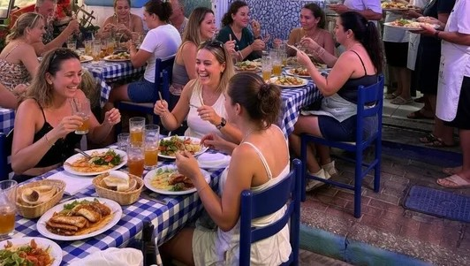
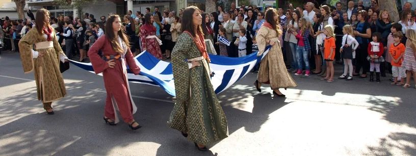

Restaurants vol op feestdagen?
Veel toeristen horen dat er op Griekse feestdagen geen plek meer is in restaurants. Dit wordt vaak verteld door touroperators.
Geen paniek – er is bijna altijd een tafel.

Veel toeristen horen dat er op Griekse feestdagen geen plek meer is in restaurants. Dit wordt vaak verteld door touroperators.

Goed nieuws: je hoeft je geen zorgen te maken. Op Kos zijn er ontzettend veel restaurants en tavernes. De horeca is uitstekend ingesteld op drukte. Ook op feestdagen blijft er ruim voldoende keus.
Grieken eten sowieso zeer laat. Je vindt zeker een tafel. Op feestdagen is het juist extra gezellig, met lokale families en traditionele gerechten.
No panic – there’s almost always a table.
Many tourists hear that on Greek public holidays there’s no room left in restaurants. This is often repeated by tour operators.
Good news: you don’t need to worry. Kos has a huge number of restaurants and tavernas. The hospitality trade is used to crowds. Even on holidays there’s still plenty of choice.
Greeks eat very late anyway. You’ll find a table. On holidays it’s often extra lively, with local families and traditional dishes.
Keine Panik – fast immer gibt’s einen Tisch.
Viele Touristen hören, an griechischen Feiertagen sei in Restaurants kein Platz mehr – oft von Reiseveranstaltern erzählt.
Gute Nachricht: Keine Sorge. Kos hat sehr viele Restaurants und Tavernen. Die Gastronomie ist an Trubel gewöhnt – auch an Feiertagen bleibt genug Auswahl.
Griechen essen sowieso sehr spät. Einen Tisch findest du. An Feiertagen ist es oft besonders gemütlich, mit lokalen Familien und traditionellen Gerichten.
Niente panico – c’è quasi sempre un tavolo.
Molti turisti sentono che nelle festività greche non resta posto nei ristoranti – spesso detto dai tour operator.
Buone notizie: non preoccuparti. A Kos ci sono tantissimi ristoranti e taverne. La ristorazione è abituata al pieno – anche nelle feste resta ampia scelta.
I greci mangiano comunque molto tardi. Un tavolo lo trovi. Nelle feste è spesso più allegro, con famiglie locali e piatti tradizionali.
Panik yok – neredeyse her zaman masa bulunur.
Birçok turist, Yunan bayramlarında restoranlarda yer kalmadığını duyar – bunu sıkça tur operatörleri söyler.
İyi haber: endişelenmeyin. Kos’ta çok sayıda restoran ve taverna var. Sektör kalabalığa alışkın – bayramda da bol seçenek kalır.
Yunanlar zaten çok geç yer. Masa bulursunuz. Bayramlarda yerli aileler ve geleneksel yemeklerle daha da keyifli olur.
Sin pánico – casi siempre hay mesa.
Muchos turistas oyen que en las fiestas griegas no queda sitio en los restaurantes – a menudo lo dicen los turoperadores.
Buenas noticias: no te preocupes. En Kos hay muchísimos restaurantes y tabernas. La hostelería está acostumbrada al ajetreo – también en fiestas queda mucha opción.
Los griegos cenan muy tarde de por sí. Encontrarás mesa. En fiestas suele ser aún más animado, con familias locales y platos tradicionales.